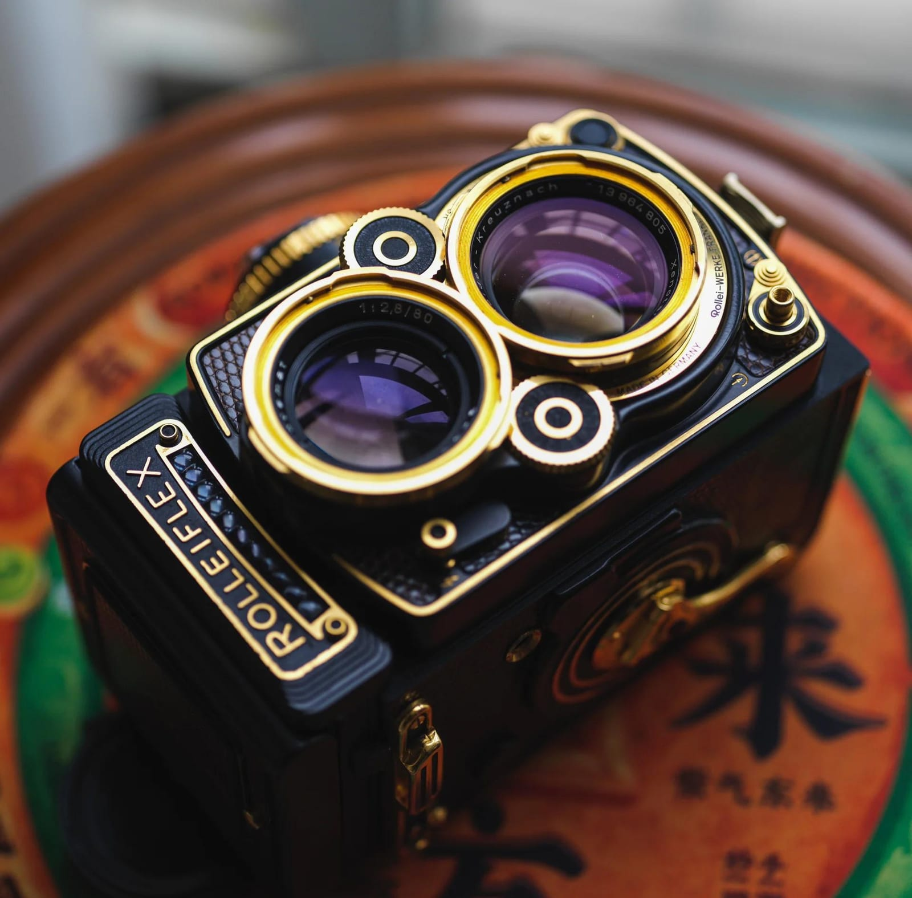

禄来 Rolleiflex 2.8F

6×6 双反传世之作，腰平取景的仪式感标杆。
客观评测
禄来 2.8F 采用 6×6 双反结构，上镜头取景、下镜头成像，标配蔡司 Planar 或施耐德 Xenotar 80mm f/2.8 镜间叶片快门，1 至 1/500 秒并支持全速闪光同步。腰平取景器放大率约 0.6 倍，对焦屏明亮，部分后期版本内置测光表。摇柄过片一卷 120 胶片可拍 12 张，成像细节与立体感在中画幅胶片中属上乘水准。
主观点评
低头取景是双反独有的仪式：影像左右相反，构图需要重新适应，却因此更加审慎。2.8F 体积不算小，但重心低沉，手持稳定，摇柄过片的声音令人上瘾。它速度慢、不能换镜头、视角受限，却让拍摄者与被摄者平视交流而非隔镜相对。今天用它拍人像，仍能收获数码难以复制的氛围与纵深。
优点与不足
- 6×6 大底成像层次丰富，放大表现优秀
- 镜间快门全速同步，影棚闪光极其方便
- 纯机械结构，做工精美如工艺品
- 腰平取景左右相反，需要适应
- 体积重量偏大，无法更换镜头
参数规格
| 类型 | 120 双镜头反光相机（TLR） |
|---|---|
| 画幅 | 6×6 厘米（约 56×56 毫米） |
| 胶片 | 120/220 卷片，一卷约 12 张 |
| 镜头 | 卡尔·蔡司 Planar 或施耐德 Xenotar 80mm f/2.8 |
| 快门 | 镜间叶片快门，1-1/500 秒及 B 门 |
| 测光 | 后期部分版本内置测光表 |
| 对焦 | 侧面旋钮手动对焦，腰平取景 |
| 取景 | 腰平取景器，放大率约 0.6 倍 |
| 连拍 | 手动摇柄过片 |
| 闪光 | 镜间快门支持全速同步 |
| 重量 | 约 1200 克 |